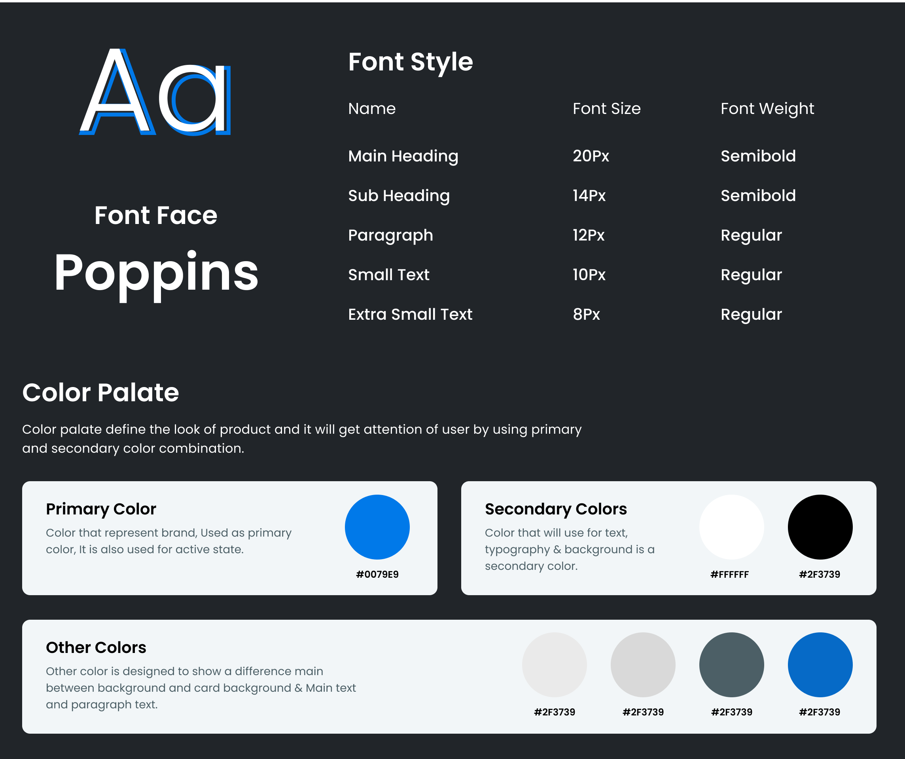
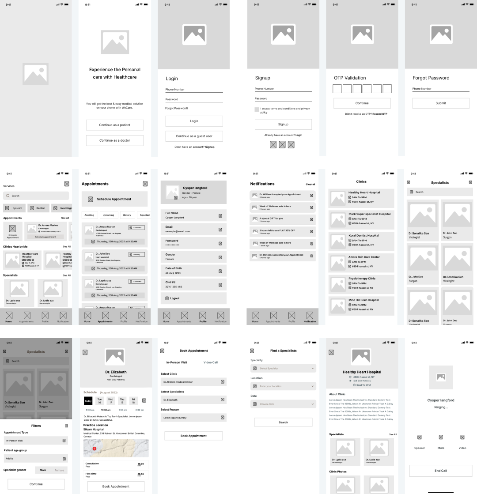
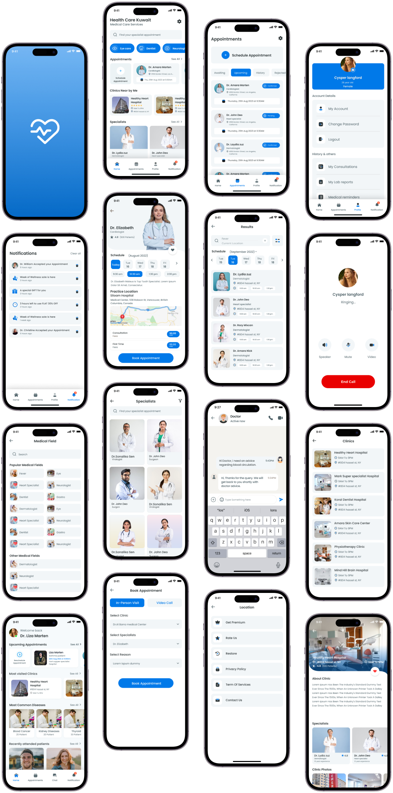

Health Care App
The Health care mobile application is designed to book appointments with doctors and maintain health records. The online booking system and online consultation options help save time for both patients and doctors. This app can offer features like appointment scheduling, online consultation through message or video call and overall health management. They also facilitate healthcare providers in delivering more efficient and patient-centered care.
Design Process
The project utilized the design thinking process, which offered a systematic methodology. This approach was crucial for establishing the framework and conducting the research effectively.
Empathize
User Interviews And Surveys
Define
User Persona & Empathy Mapping
Ideate
Brainstorming & Mood boards
Prototype
Branding, User Flow & Prototype
Test
Usability
Testing
The problem
These days, everybody is busy in their lives, and they don't want to waste their time waiting in queues. Sometimes, they skip visiting a medical center or consulting a doctor for health issues. It is especially challenging for elderly people to visit the doctor every day to seek health advice. Sometimes, they may choose the wrong doctor for their problem because they lack the option to find popular doctors in their area.
The Solution
The Healthcare app is created to help people book appointments and find specialists for their health needs. It's especially useful for old age people who need regular doctor's advice but can't easily visit a medical center. They can connect with their doctors through video calls. Health-conscious young users can also use the app to track fitness activities and get expert advice to stay fit.
Empathize
Qualitative Research
In qualitative research, I conducted numerous interviews with individuals from various age groups to gain insights into their challenges in managing health issues and health records. During these sessions, I also explored their experiences with scheduling appointments with doctors, whether through healthcare apps or phone calls. My primary focus was on understanding the issues they encounter with health apps and what they additional features they want in a health application.
Quantitative Research
Asking questions and conducting surveys are fast ways to gather information about a group in a short time. In my quantitative research, I used survey questions to understand users' opinions and experiences with medical apps and appointment booking. I also learned about their preferences for features in health-related apps.
Define
User Personas
Ideate
Brainstorming
Brainstorming in UX design is a critical phase that involves gathering a diverse group of team members, such as designers, developers, researchers, and stakeholders, to generate ideas and solutions for improving a product's user experience. This collaborative process encourages creative thinking and problem-solving, ultimately leading to better user-centered designs.
Style Guide
UI Style Guides were created to make interfaces more appealing and enhance the user experience.
Mood Board
It is created based on user data and insights gathered through research and interviews. User persona gave in-depth understanding of user goals and frustrations.
User Flow
Prototype
Lo-fi Prototyping
Hi-fi Prototyping
Testing
In order to evalute this project, this app was tested with different users. By observing users' actions and reactions, testing ensures that the final product aligns with user expectations, ultimately enhancing user satisfaction and usability. I have used the “I Like, I Wish, What if” method to gather the feedback from users.

My Learnings
- I learned the importance of qualitative and quantitative research for a project.
- It was challenging to learn some new UX techniques such as empathy map and I Like, I Wish, What If.
- I also learned how I can implement my idea on Lo-fi prototyping to Hi-fi prototyping.